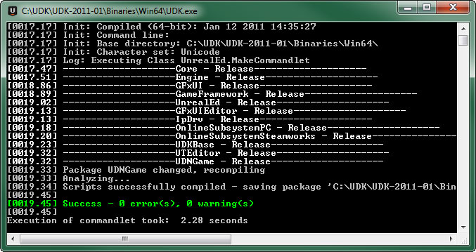
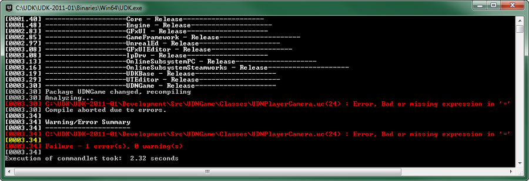
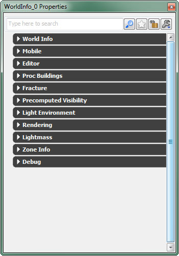
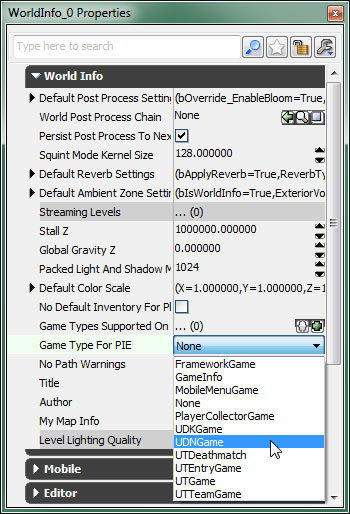

UDN
Search public documentation:
BasicGameQuickStartCH
English Translation
日本語訳
한국어
Interested in the Unreal Engine?
Visit the Unreal Technology site.
Looking for jobs and company info?
Check out the Epic games site.
Questions about support via UDN?
Contact the UDN Staff
日本語訳
한국어
Interested in the Unreal Engine?
Visit the Unreal Technology site.
Looking for jobs and company info?
Check out the Epic games site.
Questions about support via UDN?
Contact the UDN Staff
基础游戏快速入门
概述
项目创建
UnrealScript 项目
任何新游戏项目最终都会需要使用 UnrealScript 创建自定义类来构成游戏的游戏性。添加新 UnrealScripts 需要创建一个自定义 UnrealScript 项目，以便保存脚本，这些脚本已经被编译为一个新的 UnrealScript 软件包（.u 文件）。 要创建一个 UnrealScript 项目，首先要在您的虚幻安装中找到..\Development\Src 目录。在目录内部，使用您希望命名给项目的名称创建一个新文件夹。通常，它是您的游戏名称的缩写版本，后面紧接着 "Game"。例如，Unreal Tournament 游戏使用的是 UTGame 。
在这里创建的示例游戏中，UnrealScript 项目将会被命名为 UDNGame 。创建完成后，新文件夹位于 ..\Developement\Src 目录中：
 在这个
在这个 UDNGame 文件夹中，创建一个新的文件夹，名为 Classes 。这是真正要包含项目脚本的文件夹。
内容目录
没有内容，游戏就不能称之为游戏。您必须在屏幕上显示视觉元素，播放音频等等，当然还需要使用地图将所有内容组合在一起，然后将这些内容显示给玩家。通常，内容存储在软件包中（地图也是一个软件包），软件包本身存储在虚幻安装的..\[GameName]\Content 目录中。通常在可以组织软件包和地图的 Content 目录中提供了诸如 Characters 、 Environments 、 Maps 和 Sounds 这样的文件夹等等。
如果使用的是 UDK，示例内容中都包含这些子文件夹。您可以轻而易举地将您的游戏自定义内容软件包和地图保存在这些文件夹中，一切都会正常运作。然而，如果您希望将您的自定义内容与其他内容区分开，那么您只需在 Content 目录中创建一个新的文件夹，可以用您的游戏名称命名，然后将您的软件包保存在这个文件夹中。您甚至可以在这个文件夹中添加多个文件夹，使用与 Content 目录中相似的方式组织软件包。
游戏可玩性类
相机
所有游戏的一个最基本内容是玩家观看这个世界的方式。在虚幻中，玩家视点的位置和方位由PlayerController 类的 GetPlayerViewPoint() 函数控制。默认情况下，如果提供了玩家相机对象，可以使用它处理计算结果。它可以使用下面两个方法中的其中一种计算位置和方位：
- 通过
UpdateCamera()函数调用Pawn中的CalcCamera()。 - 直接在
UpdateCamera()函数中计算视角。
CalcCamera() 函数在 Pawn 类中进行这项操作，但是将相机逻辑规则封装在一个单独类中的设计理念以及使用一个提供所有相机功能（例如后期处理和相机动画）访问权限的 camera 类的实际情况，这个示例将会使用一个自定义 Camera 类控制定位相机。尽管该示例使用的是第三人称视角，但是通过更改计算相机位置和旋转的逻辑规则可以轻松地实现任何其他相机类型。
相机技术指南中提供了相机的详细说明以及其他视角实现的示例。
class UDNPlayerCamera extends Camera;
var Vector CamOffset;
var float CameraZOffset;
var float CameraScale, CurrentCameraScale; /** 默认相机距离的乘数 */
var float CameraScaleMin, CameraScaleMax;
function UpdateViewTarget(out TViewTarget OutVT, float DeltaTime)
{
local vector HitLocation, HitNormal;
local CameraActor CamActor;
local Pawn TPawn;
local vector CamStart, CamDirX, CamDirY, CamDirZ, CurrentCamOffset;
local float DesiredCameraZOffset;
// 不要在插值的过程中更新输出观察目标
if( PendingViewTarget.Target != None && OutVT == ViewTarget && BlendParams.bLockOutgoing )
{
return;
}
// 视图目标上的默认 FOV
OutVT.POV.FOV = DefaultFOV;
// 浏览相机 actor。
CamActor = CameraActor(OutVT.Target);
if( CamActor != None )
{
CamActor.GetCameraView(DeltaTime, OutVT.POV);
// 通过 CameraActor 获取长宽比。
bConstrainAspectRatio = bConstrainAspectRatio || CamActor.bConstrainAspectRatio;
OutVT.AspectRatio = CamActor.AspectRatio;
// 查看 CameraActor 是否需要覆盖使用的 PostProcess 设置。
CamOverridePostProcessAlpha = CamActor.CamOverridePostProcessAlpha;
CamPostProcessSettings = CamActor.CamOverridePostProcess;
}
else
{
TPawn = Pawn(OutVT.Target);
// 为 Pawn Viewtarget 提供了一个指定相机位置的机会。
// 如果 Pawn 没有覆盖相机视图，那么我们将会继续使用我们自己的默认设置
if( TPawn == None || !TPawn.CalcCamera(DeltaTime, OutVT.POV.Location, OutVT.POV.Rotation, OutVT.POV.FOV) )
{
/**************************************
* Calculate third-person perspective
* Borrowed from UTPawn implementation
**************************************/
OutVT.POV.Rotation = PCOwner.Rotation;
CamStart = TPawn.Location;
CurrentCamOffset = CamOffset;
DesiredCameraZOffset = 1.2 * TPawn.GetCollisionHeight() + TPawn.Mesh.Translation.Z;
CameraZOffset = (DeltaTime < 0.2) ? DesiredCameraZOffset * 5 * DeltaTime + (1 - 5*DeltaTime) * CameraZOffset : DesiredCameraZOffset;
CamStart.Z += CameraZOffset;
GetAxes(OutVT.POV.Rotation, CamDirX, CamDirY, CamDirZ);
CamDirX *= CurrentCameraScale;
TPawn.FindSpot(Tpawn.GetCollisionExtent(),CamStart);
if (CurrentCameraScale < CameraScale)
{
CurrentCameraScale = FMin(CameraScale, CurrentCameraScale + 5 * FMax(CameraScale - CurrentCameraScale, 0.3)*DeltaTime);
}
else if (CurrentCameraScale > CameraScale)
{
CurrentCameraScale = FMax(CameraScale, CurrentCameraScale - 5 * FMax(CameraScale - CurrentCameraScale, 0.3)*DeltaTime);
}
if (CamDirX.Z > TPawn.GetCollisionHeight())
{
CamDirX *= square(cos(OutVT.POV.Rotation.Pitch * 0.0000958738)); // 0.0000958738 = 2*PI/65536
}
OutVT.POV.Location = CamStart - CamDirX*CurrentCamOffset.X + CurrentCamOffset.Y*CamDirY + CurrentCamOffset.Z*CamDirZ;
if (Trace(HitLocation, HitNormal, OutVT.POV.Location, CamStart, false, vect(12,12,12)) != None)
{
OutVT.POV.Location = HitLocation;
}
}
}
// 最后应用相机修改器（例如，视图浮动）
ApplyCameraModifiers(DeltaTime, OutVT.POV);
}
defaultproperties
{
CamOffset=(X=12.0,Y=0.0,Z=-13.0)
CurrentCameraScale=1.0
CameraScale=9.0
CameraScaleMin=3.0
CameraScaleMax=40.0
}
PlayerController
所有游戏的另一个基础内容是如何处理玩家的输入信息以及如何对其进行转换控制游戏，直接控制画面上的主要角色，还是使用点击界面控制游戏，或者是任何其他控制游戏的方法。显而易见，负责确定玩家控制游戏的方式的类是PlayerController 类。
基础 PlayerController 执行函数足以使玩家可以到处跑，因为它们可以处理玩家输入信息并将其转化为运动。在这个示例中使用的自定义 PlayerController 类只是用来对我们在上面创建的自定义 Camera 类进行赋值。当然，在您不断丰富您的游戏内容过程中，您一定会需要修改这个类，以便添加您的游戏特定执行函数需要的逻辑规则。
角色技术指南详细说明了 PlayerController 类以及如何定制它使其适用于新的游戏类型。
class UDNPlayerController extends GamePlayerController;
defaultproperties
{
CameraClass=class'UDNGame.UDNPlayerCamera'
}
Pawn
虽然PlayerController 类可以确定如何使用玩家输入信息控制游戏，在这个示例中将会涉及直接控制角色，角色的视觉表现形式和决定他与物理世界之间的交互的逻辑规则都封装在 Pawn 类中。在这个示例中的自定义 Pawn 类将不会为与环境之间的交互添加任何特殊逻辑规则，但是它将会负责设置角色的视觉表现形式。也就是说它需要设置一个骨架网格物体、动画和物理资源来显示游戏中的角色。
角色技术指南详细说明了 Pawn 类以及它与 PlayerController 类合作的工作原理。
class UDNPawn extends Pawn;
var DynamicLightEnvironmentComponent LightEnvironment;
defaultproperties
{
WalkingPct=+0.4
CrouchedPct=+0.4
BaseEyeHeight=38.0
EyeHeight=38.0
GroundSpeed=440.0
AirSpeed=440.0
WaterSpeed=220.0
AccelRate=2048.0
JumpZ=322.0
CrouchHeight=29.0
CrouchRadius=21.0
WalkableFloorZ=0.78
Components.Remove(Sprite)
Begin Object Class=DynamicLightEnvironmentComponent Name=MyLightEnvironment
bSynthesizeSHLight=TRUE
bIsCharacterLightEnvironment=TRUE
bUseBooleanEnvironmentShadowing=FALSE
End Object
Components.Add(MyLightEnvironment)
LightEnvironment=MyLightEnvironment
Begin Object Class=SkeletalMeshComponent Name=WPawnSkeletalMeshComponent
//您的网格物体属性
SkeletalMesh=SkeletalMesh'CH_LIAM_Cathode.Mesh.SK_CH_LIAM_Cathode'
AnimTreeTemplate=AnimTree'CH_AnimHuman_Tree.AT_CH_Human'
PhysicsAsset=PhysicsAsset'CH_AnimCorrupt.Mesh.SK_CH_Corrupt_Male_Physics'
AnimSets(0)=AnimSet'CH_AnimHuman.Anims.K_AnimHuman_BaseMale'
Translation=(Z=8.0)
Scale=1.075
//通用网格物体属性
bCacheAnimSequenceNodes=FALSE
AlwaysLoadOnClient=true
AlwaysLoadOnServer=true
bOwnerNoSee=false
CastShadow=true
BlockRigidBody=TRUE
bUpdateSkelWhenNotRendered=false
bIgnoreControllersWhenNotRendered=TRUE
bUpdateKinematicBonesFromAnimation=true
bCastDynamicShadow=true
RBChannel=RBCC_Untitled3
RBCollideWithChannels=(Untitled3=true)
LightEnvironment=MyLightEnvironment
bOverrideAttachmentOwnerVisibility=true
bAcceptsDynamicDecals=FALSE
bHasPhysicsAssetInstance=true
TickGroup=TG_PreAsyncWork
MinDistFactorForKinematicUpdate=0.2
bChartDistanceFactor=true
RBDominanceGroup=20
bUseOnePassLightingOnTranslucency=TRUE
bPerBoneMotionBlur=true
End Object
Mesh=WPawnSkeletalMeshComponent
Components.Add(WPawnSkeletalMeshComponent)
Begin Object Name=CollisionCylinder
CollisionRadius=+0021.000000
CollisionHeight=+0044.000000
End Object
CylinderComponent=CollisionCylinder
}
HUD
HUD 类主要负责向玩家显示游戏的相关信息。信息以及显示方式完全由游戏指定。因为这样，这个示例执行函数将只需提供一个空白的石板，您可以通过它创建您自己的自定义 HUD，可以使用 Canvas 对象或 Scaleform GFx。
HUD 技术指南提供了关于在虚幻引擎 3 中使用 Canvas 对象或 Scaleform GFx 集成创建抬头显示器的详细信息。
class UDNHUD extends MobileHUD;
defaultproperties
{
}
Gametype
游戏类型是游戏的核心内容。它可以决定游戏的规则和游戏进行或结束的条件。说清楚一点就是它完全取决于游戏。游戏类型还可以负责通知引擎哪些类可以用作PlayerControllers 、 Pawns 和 HUD 等等。游戏类型的示例执行函数只会在 defaultproperties 中指定这些类，然后剩下的执行函数由您决定。
游戏类型技术指南中进一步阐述了游戏类型的概念，而且会深入探讨定制您的自定义游戏类型这部分内容。
class UDNGame extends FrameworkGame;
defaultproperties
{
PlayerControllerClass=class'UDNGame.UDNPlayerController'
DefaultPawnClass=class'UDNGame.UDNPawn'
HUDType=class'UDNGame.UDNHUD'
bDelayedStart=false
}
编译
DefaultEngine.ini 文件的 [UnrealEd.EditorEngine] 部分中的 EditPackages 数组完成。添加 UDNGame 项目的语法如下所示：
+EditPackages=UDNGame
UTGame 和 UTGameContent 项目。是否要这样做要根据您制作的游戏类型决定。现在，最终的 [UnrealEd.EditorEngine] 部分应该如下所示：
[UnrealEd.EditorEngine] +EditPackages=UTGame +EditPackages=UTGameContent +EditPackages=UDNGame
- 运行
Make命令行开关 - 编译 UnrealFrontend
- 运行游戏或编辑器
 选择“是”，然后会出现一个控制台窗口，其中显示的是编译过程状态。
选择“是”，然后会出现一个控制台窗口，其中显示的是编译过程状态。

您应该会看到 Success - 0 error(s), 0 warning(s)，前提是编译成功。如果出现错误，那么错误消息会通知您发生错误的文件名和行编号，这样可以使查找和解决错误的过程变得简单。
发生错误的文件名应该会在上面的图片中标明。行编号会显示在文件名后面的括号 () 中。同时还会显示错误的相关描述。这个错误将通知我们等号 (=) 后面的项无效。这可能是由于名称拼写错误、变量未声明等等原因造成的。解决这个错误，然后使用与上面相同的程序再次进行编译，最后编译才会成功。测试
- 在虚幻编辑器中，在您的测试地图
WorldInfo属性中将UDNGame设置为 PIE 游戏类型。 - 在
DefaultGame.ini配置文件中，将UDNGame设置为引擎的默认游戏类型。
UDNGame 游戏类型设置为供在虚幻编辑器或引擎中游戏时特殊地图使用的 Gametype，请从 View（视图） 菜单中选择 World Properties（世界属性） 。接下来将会显示 WorldInfo 属性窗口。

展开 Game Type 类别，然后找到Gametype for PIE 属性。在可用的游戏类型列表中选择 UDNGame 。

现在，您可以在编辑器中使用 Play in PIE 或 Play from here 功能运行地图，与此同时它应该使用自定义游戏类型，通过完全可以控制的角色显示第三人称视角。 您还可以将 Default Game Type（默认游戏类型） 属性设置为
您还可以将 Default Game Type（默认游戏类型） 属性设置为 UDNGame 强制这个地图使用自定义游戏类型，无论 .ini 文件（下面将会进行讲解）中的默认设置是什么。
默认游戏类型
注意： 在编辑 .ini 文件时应该关闭编辑器。
要将 UDNGame 游戏类型设置为引擎的默认游戏类型，请在您的虚幻安装的 ..\[GameName]\Config 目录中打开 Defaultgame.ini 配置文件。这样在地图 URL 中没有指定游戏类型或地图没有游戏类型前缀的情况下，在所有的地图中都会使用这个游戏类型。在 [Engine.GameInfo] 项中，要将 UDNGame 游戏类型赋给三个属性。同时还要将 PlayerController 类赋给属性。最后，这里有一些额外的代码行，它们可以设置那些只适用于将会被删除的 UT3 示例游戏的游戏类型前缀。
最后的 [Engine.GameInfo] 项如下所示：
[Engine.GameInfo] DefaultGame=UDNGame.UDNGame DefaultServerGame=UDNGame.UDNGame PlayerControllerClassName=UDNGame.UDNPlayerController GameDifficulty=+1.0 MaxPlayers=32 DefaultGameType="UDNGame.UDNGame"